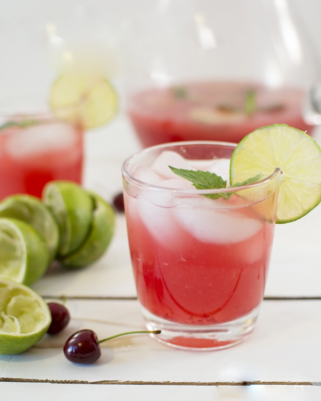
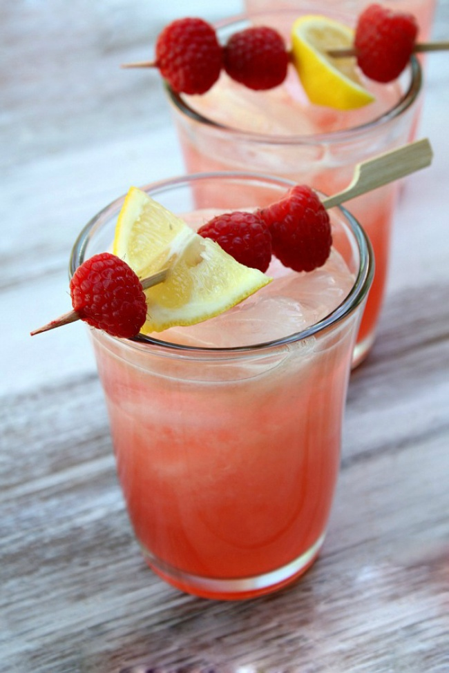

Cherry lemonade
You will need:
- 1 large lemon
- 2 medium oranges
- 3-4 leaves of fresh mint
- 100 ml of cherry syrup
- ice cubes
- sparkling water
Preparation:
Slice 1/2 of orange and 1/4 of lemon. Squeeze the juice from the remaining fruits. Pour juice and syrup into the pitcher, add mint, a little pre mash it in your hands. Fill up half a pitcher with the ice and cover sparkling water. If necessary, add the syrup to the desired sweetness. You can also use non-carbonated water.

Raspberry lemonade with limoncello
You will need:
- 1 cup raspberries (about 170 g)
- 1 lemon
- 100 g of sugar
- 800 ml of cold water + 200 ml water for syrup
- 75 ml limoncello or other lemon liqueur
- ice and mint
Preparation:
Boil 200 ml of water with sugar, remove it from the heat. Put the berries in syrup and crush them. Strain the syrup through a sieve to get rid of seeds, and cool it. Squeeze the juice from a lemon. Add syrup and limoncello, cover with water. Serve with ice, mint and raspberry.